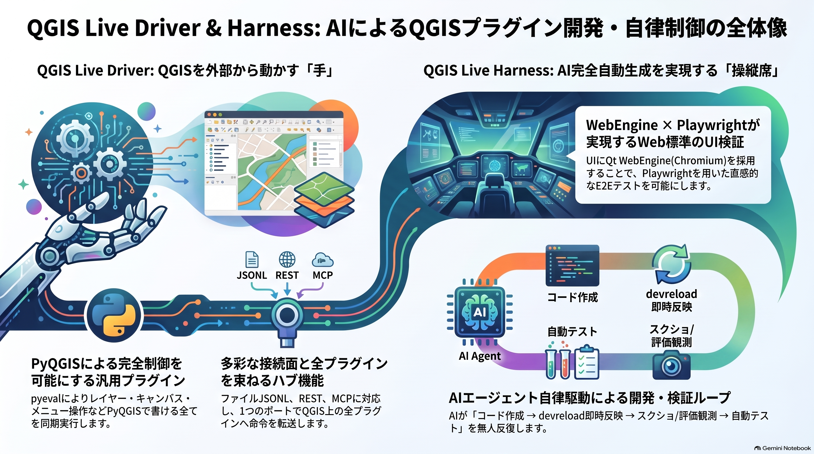

Overview
QGIS Live Harness
QGISプロセスをAI/外部スクリプトから自律駆動するための開発・制御・検証の基盤(ハーネス)。

解説動画:
QGIS Live Driver(MCPからQGISを操作するドライバ)
QGIS Live Harness(AIによる全自動開発基盤)
このリポジトリは単体のプラグイン製品ではなく、QGISに「取り付けて操縦する外側の装具」そのもの。
(リポジトリ/ディレクトリ名: qgis_live_harness)
- 使い方・セットアップまずここ。Driver単体利用 / Harnessでのプラグイン開発の手順
- セキュリティ脅威モデル・認証方式・防御の限界。有効化前に読む
- QGIS Live DriverQGIS内で動く制御専用プラグイン。単独導入できる汎用部品
- QGIS Live HarnessDriverの上に乗るクライアントAPI・セッション管理・検証基盤
- プラグイン配布開発したプラグインを単独配布物にする手順と注意点
- Harnessのプラグイン化何がQGIS内に移せて、何が構造上外に残るのか
構成(全体像)
flowchart TB
subgraph CL["クライアント"]
C["AI / CI / 人間"]
end
subgraph H["QGIS Live Harness (E2Eプラグイン開発・検証環境)"]
HC["LivePage / live:*<br/>ensure / reload / devreload<br/>L1 Playwright / L2 test:live<br/>MCPアダプタ qgis-mcp.mjs"]
end
subgraph D["QGIS Live Driver (QGIS側の手)"]
DC["ファイルJSONL<br/>REST /api/*<br/>MCP /mcp・stdio shim"]
end
subgraph QGIS["QGIS本体"]
Q["iface / QgsProject<br/>他プラグイン"]
end
CL --> H
CL -.->|直接接続| D
H --> D
D --> QGIS
破線 = Driver単体でも成立する経路(Harness不要)。
| 層 | 名前 | 役割 |
|---|---|---|
| QGIS側の手 | QGIS Live Driver (qgis_live_driver) |
QGIS内で動く制御専用プラグイン。このリポジトリに依存しない汎用部品で、任意のQGISへ単独導入して遠隔操作面を得られる |
| E2Eプラグイン開発・検証環境 (外側の装具) |
QGIS Live Harness (このリポジトリ全体) | Driverの操作面の上に乗る、クライアントAPI・セッション管理・ホットリロード・検証の基盤。リポジトリがあって初めて成り立つ |
さらに qgis-plugin/webengine_plugin/ を、Harness上で育てる開発対象プラグインの
「器」(Qt WebEngineベースのテンプレート)として同梱する。
- Driverだけ使う:
python/plugins/へのコピーで成立。ファイルJSONL・REST・MCPの 操作面を持ち、リポジトリもNodeも不要 - Harnessとして使う: このリポジトリを開けば、高水準クライアント・ ensure/reload/devreload・L1/L2テスト・MCPアダプタが揃う
この上で回るのは エージェンティックループ: AIが「書く→devreloadで実機反映→ eval/pyeval/スクショで観測→test:liveで検証」を人間なしで反復する。
flowchart TB
subgraph TOP["利用者: AIエージェント / CI / 人間"]
MCPC["MCPクライアント(Devin等)"]
CLIC["CLI / 自作スクリプト"]
HTTPC["任意HTTPクライアント"]
end
subgraph HARNESS["QGIS Live Harness = このリポジトリ(基盤)"]
ADAPT["MCPアダプタ<br/>scripts/qgis-mcp.mjs(stdio)"]
NODE["クライアント層<br/>LivePage / qgis-session<br/>live:* / test:live"]
end
subgraph Q["常駐QGISプロセス"]
DRIVER["QGIS Live Driver(汎用部品)<br/>pyeval / 地図スクショ / plugin_id転送(hub)<br/>ファイルJSONL + 内蔵HTTP(/mcp,/api/*)"]
VESSEL["webengine_plugin(器)<br/>view/channel + view用LiveDriver"]
PROD["開発対象(repo側)<br/>bridge.py / logic.py / ui/<br/>WEBENGINE_DEV_SRCから別名import"]
VESSEL --> PROD
end
MCPC -->|stdio| ADAPT --> NODE
MCPC -.->|"mcp_stdio.py / HTTP /mcp<br/>(Harness不要)"| DRIVER
HTTPC -.->|"/api/*(Harness不要)"| DRIVER
CLIC --> NODE
NODE -->|ファイルJSONL| DRIVER
NODE -->|ファイルJSONL| VESSEL
DRIVER -.->|plugin_id転送| VESSEL
破線 = Driver単体でも成立する経路(Harnessに依存しない)。 実線 = Harnessが提供する層。
環境要件
- Windows 10/11 専用(deploy/起動スクリプトがPowerShell実装)
- QGIS 4.0.x、Qt6/PyQt6。
C:\Program Files\QGIS*から自動検出(別場所はQGIS_EXEenv) - Node.js 24+ (Harness側クライアント用。Driver単体利用なら不要)
- Python 3.13+ (ユニットテスト用。
pip install pytest)